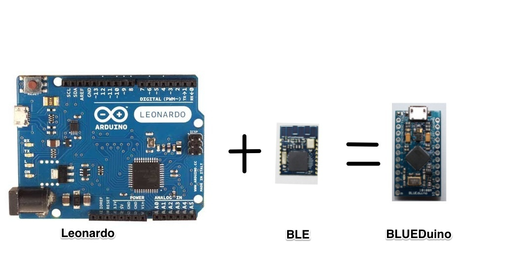

Updated - 04/12/2014
- BLE module pre-loaded firmware name ZeroBeacon
- Support the amazing iBeacon technology and configure the iBeacon with UART port.
- BLE firmware upgradable - the firmware can be upgraded through UART port.
Description:
The BlueDuino is an Arduino compatible microcontroller development board based on the ATmega32U4 IC with Bluetooth 4.0. a.k.a. Bluetooth Low Energy (BLE), built in. It's based on Pro Micro designed by Sparkfun Electronics. It is based around the Arduino Leonardo which means you no longer need an addition USB-Serial Interface to program your Arduino. Just plug in the board, download the addition Arduino add-on and your ready to start programming! It's the easiest way to get Bluetooth 4.0 in your project!.
 flickr
The board is broken down into 24 individual pins and has 3 indication LEDs, one of which is dedicated to power. It features 4 channels of 10-bit ADC, 5 PWM pins, 12 DIOs as well as hardware serial connections Rx and Tx. This version run on 5V at 16 MHz and can also run on 10V supplied to the "RAW" pin.
Dimensions: 1.3x0.7" , same size with Arduino Pro Micro
Features:
- ATMega 32U4 running at 3.3V/8MHz
- Bluetooth 4.0 (BLE) - CC2540
- Supported under Arduino IDE v1.0.1
- On-Board micro-USB connector for programming
- 4 x 10-bit ADC pins
- 12 x Digital I/Os (5 are PWM capable)
- Rx and Tx Hardware Serial Connections
How to use:
Documents:
Package contains:
- BlueDuino x 2
- 12p pin header x 2
{kind=link}